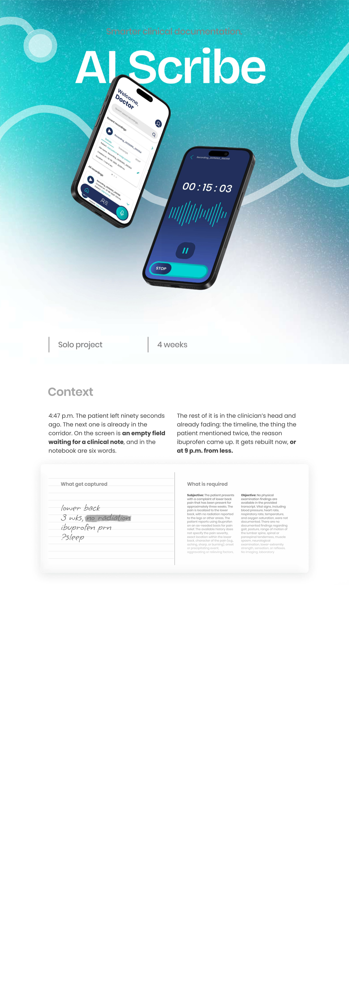
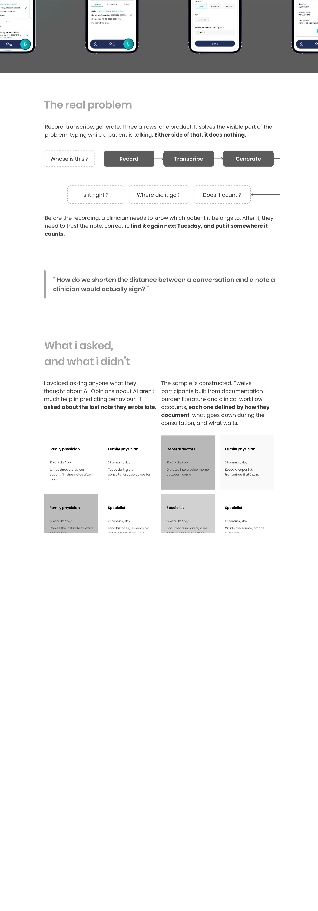
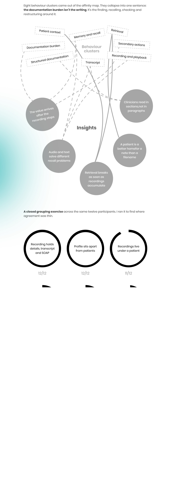
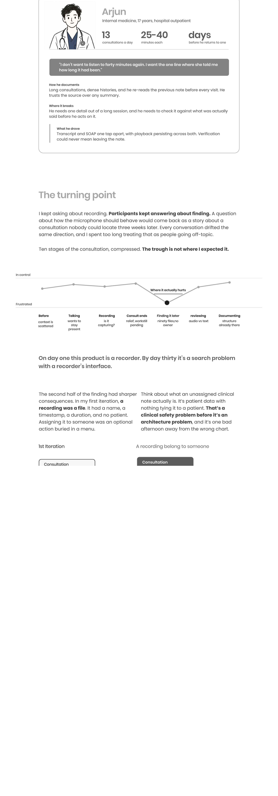
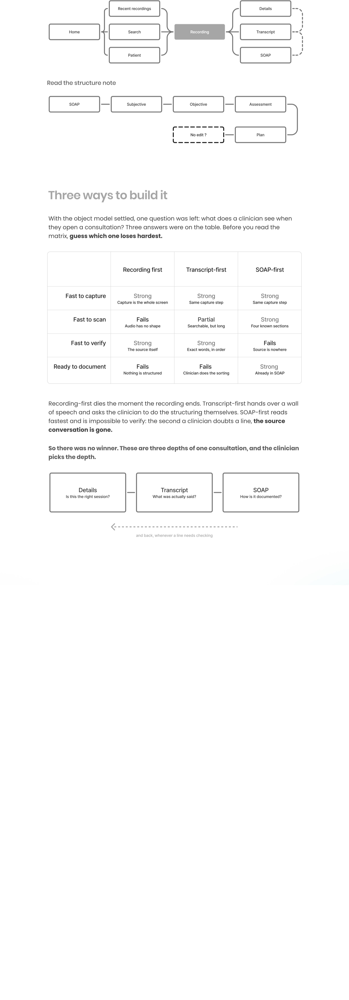

AI Clinical Scribe
One Theracure — an interaction design case study by Hanumant Kulkarni





Prefer the file? Open the case study as a PDF.
One Theracure — an interaction design case study by Hanumant Kulkarni





Prefer the file? Open the case study as a PDF.